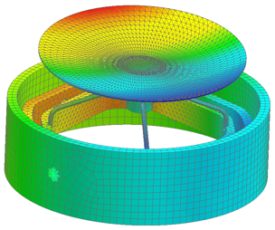

Examine the results
Examine the results to verify that the model has eight rigid body modes:
-
Six rigid body modes for the unconstrained movement of the entire assembly.
-
Two rigid body modes for the unconstrained rotations of the internal gimbal components.
 Post-Processing Navigator
Post-Processing Navigator
-
 base_fem
base_fem -
 Load
Load -
 base_fem (expand)
base_fem (expand)
-
Mode 1 (expand)
-
Displacement – Nodal (expand)
-
 Magnitude
Magnitude
 Next Mode/Iteration (Post Processing toolbar)
Next Mode/Iteration (Post Processing toolbar)
Use the Next Mode/Iteration  command to view additional modes. Examine the glue connection and 1D spring element connections to ensure that there are no issues that might indicate a problem with the model.
command to view additional modes. Examine the glue connection and 1D spring element connections to ensure that there are no issues that might indicate a problem with the model.
After viewing additional mode shapes, return to the model.
 Return to Model (Layout Manager toolbar)
Return to Model (Layout Manager toolbar)